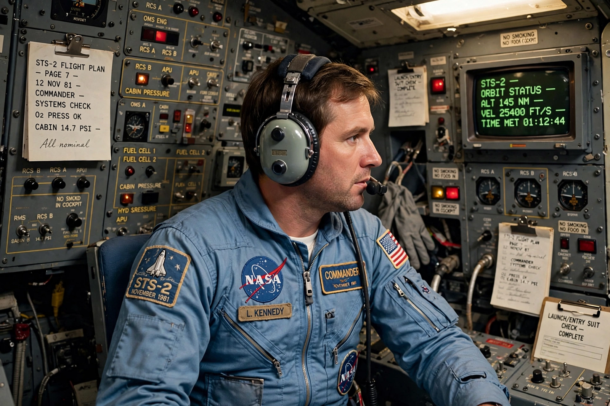

John Young (astronaut)
From Wikipedia, the free encyclopedia
| John Young (astronaut) | |
|---|---|
| Born | 24 September 1930, San Francisco |
| Died | 5 January 2018 (aged 87) |
| Missions | Gemini 3, Gemini 10, Apollo 10, Apollo 16, STS-1, STS-9 |

Young commands STS-1.John Watts Young (1930–2018) was the most experienced astronaut of NASA's heroic age: the only person to fly six missions in four different spacecraft classes — Gemini (twice), Apollo command module, Apollo lunar module, and the Space Shuttle, which he commanded on its maiden flight STS-1 in 1981 at age 50. He walked on the Moon on Apollo 16 and served as Chief of the Astronaut Office for 13 years.
Young's range was unmatched: he smuggled a corned-beef sandwich aboard Gemini 3 (a scandal in Congress), piloted the gutsiest test flight in NASA history — STS-1, the first crewed maiden flight of any spacecraft — and flew the Shuttle again at 53 on STS-9. His laconic understatement ('that's the way it goes') masked the corps' most trusted engineering judgement.
Safety voice
After Challenger, Young's internal memos criticising NASA's safety culture leaked and made him the astronauts' conscience; he was eased out of flight status but stayed at NASA until 2004 — a 42-year career, the longest of any astronaut. When he died in 2018, tributes stressed that every programme from Mercury to the station bore his fingerprints.
See also
Apollo 16 · Apollo 10 · STS-1 · Charles Duke